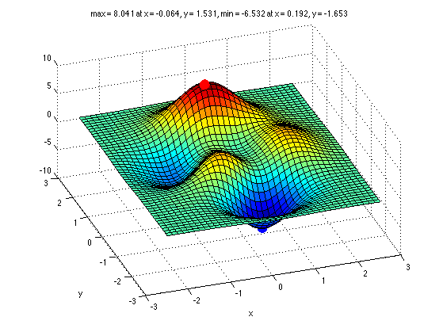
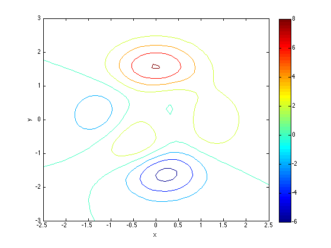
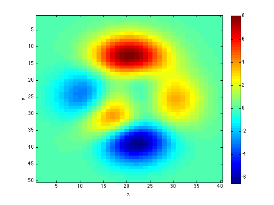

Display various plots of a multimodal 2D function, peaks()
Contents
[X, Y] = meshgrid(linspace(-2.5,2.5,40),linspace(-3,3,50));
Z = peaks(X,Y);
find optimum by exhaustive search
Zmax = max(Z(:));
[rowMax, colMax] = find(Zmax==Z);
Zmin = min(Z(:));
[rowMin, colMin] = find(Zmin==Z);
Xmax = X(rowMax, colMax); Ymax = Y(rowMax, colMax);
Xmin = X(rowMin, colMin); Ymin = Y(rowMin, colMin);
str = sprintf('max = %5.3f at x = %5.3f, y = %5.3f, min = %5.3f at x = %5.3f, y = %5.3f', ...
Zmax, Xmax, Ymax, Zmin, Xmin, Ymin);
figure;
surf(X,Y,Z);
xlabel('x');
ylabel('y');
view(-19, 48)
hold on;
h = plot3(Xmax, Ymax, Zmax, 'ro');
set(h, 'markerfacecolor', 'r', 'markersize', 12);
hold on;
h = plot3(Xmin, Ymin, Zmin, 'bo');
set(h,'markerfacecolor', 'b', 'markersize',12);
title(str)
printPmtkFigure peaksSurf;
figure;
contour(X,Y,Z);
xlabel('x');
ylabel('y');
colorbar;
printPmtkFigure peaksContour;
figure;
imagesc(flipud(Z));
colorbar;
xlabel('x');
ylabel('y');
printPmtkFigure peaksImagesc;
  